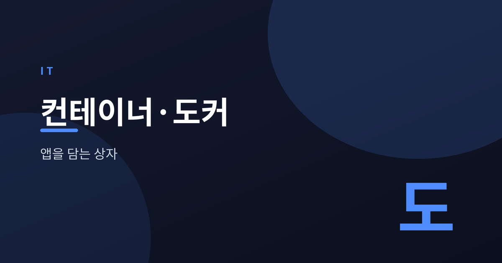
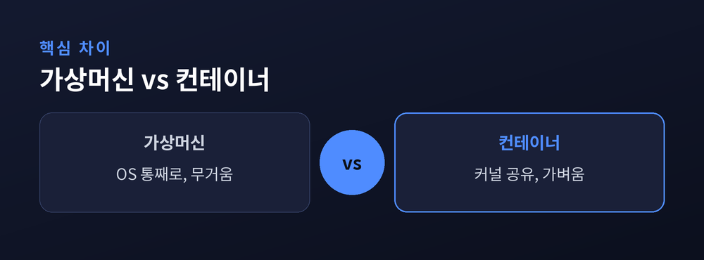
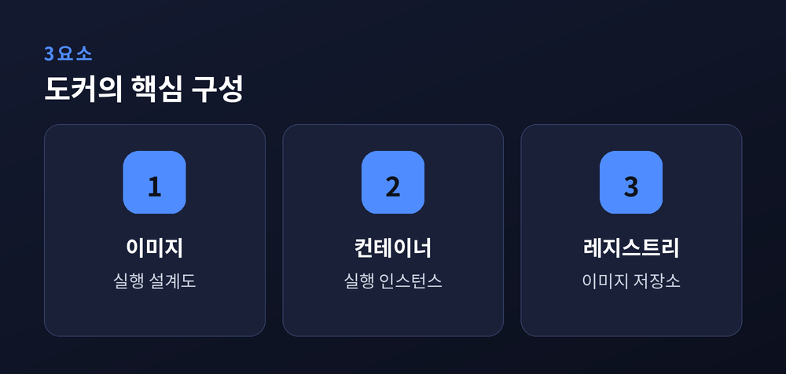
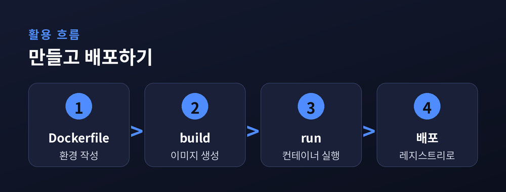
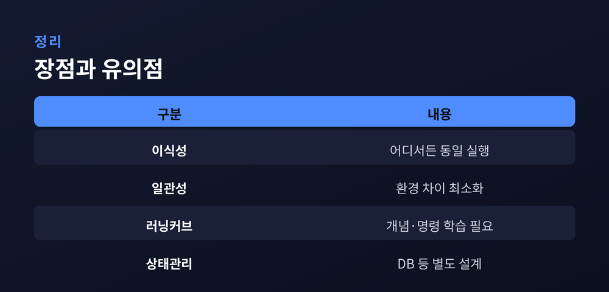

앱을 통째로 담는 상자

개발자들이 오래 앓아 온 말이 있습니다.
"내 컴퓨터에선 잘 되는데요."
같은 코드가 개발 PC에서는 돌아가는데, 서버에서는 멈추는 일이 흔합니다.
원인은 대개 환경 차이입니다.
운영체제 버전, 설치된 라이브러리, 설정값이 조금만 어긋나도 결과가 달라집니다.
컨테이너는 이 문제를 정면으로 겨냥합니다.
애플리케이션과 그 실행에 필요한 것들을 하나의 상자에 함께 담아, 어디서든 똑같이 실행하자는 발상입니다.
비슷한 목적의 기술로 가상머신(VM)이 먼저 있었습니다.
VM은 하드웨어 위에 운영체제를 통째로 하나 더 얹습니다.
그만큼 격리는 강하지만 무겁고, 켜는 데도 시간이 걸립니다.
컨테이너는 접근이 다릅니다.
운영체제의 핵심인 커널을 호스트와 공유하고, 앱과 그 주변 환경만 격리합니다.
무거운 OS를 통째로 얹지 않으니 가볍고, 실행이 빠릅니다.

컨테이너를 다루는 대표 도구가 도커입니다.
핵심은 세 가지로 정리됩니다.
이미지는 무엇을 어떻게 실행할지 적어 둔 설계도입니다.
컨테이너는 그 이미지를 실제로 띄운 실행 인스턴스입니다.
레지스트리는 이미지를 올리고 내려받는 저장소로, 도커 허브가 대표적입니다.
설계도(이미지) 하나로 똑같은 실행 결과(컨테이너)를 몇 개든 찍어 냅니다.

실제 흐름은 단순한 편입니다.
먼저 Dockerfile에 환경과 실행 방법을 적습니다.
이 파일을 build하면 이미지가 만들어집니다.
만든 이미지를 run하면 컨테이너가 실행됩니다.
이미지를 레지스트리에 올리면, 다른 서버에서 내려받아 그대로 배포할 수 있습니다.

정리하면 장점과 유의점이 함께 있습니다.
이식성과 일관성은 분명한 강점입니다.
한 번 만든 상자는 노트북에서든 클라우드에서든 같은 모습으로 돕니다.
반면 처음에는 개념과 명령어에 익숙해질 시간이 필요합니다.
데이터베이스처럼 상태를 오래 보관해야 하는 경우는 별도 설계가 필요합니다.

도구의 성격을 알고 쓰면, 환경 차이로 인한 소모를 크게 줄일 수 있습니다.